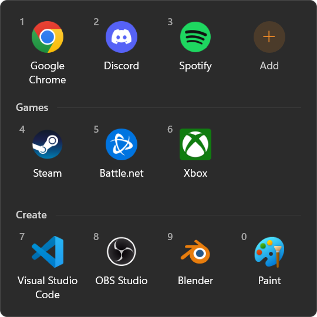
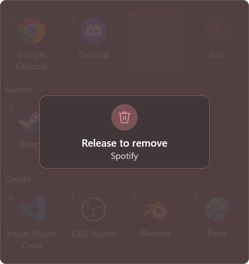

Press Win + ` and a small box of your favourite apps pops up next to the mouse. Click one, or press its number, and it opens. No Start menu, no desktop full of shortcuts.
One small exe, nothing to install · what's new
Not code-signed yet, so Windows may warn the first time: click More info, then Run anyway.

Win + ` or the tray icon. The box appears next to the mouse and closes when you click away or press Esc.
The first ten apps have numbers. Press 1 to 0 and they open without touching the mouse.
The + tile searches every app on your PC. Or browse for any program or shortcut, or drop files on the box.
Sort apps into sections like Games or Work. Rename or delete a section from its heading.
Drag tiles into the order you like, and in and out of categories.
Follows Windows' own light or dark mode, and stays sharp on any screen scale.

Drag an app out of the box and hold it there. After two seconds it says Release to remove: let go, and it's gone.
Changed your mind? Bring it back inside, or let go sooner, and nothing happens. Right-click › Remove works too.
%APPDATA%\OnionLauncher\apps.json.